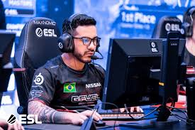
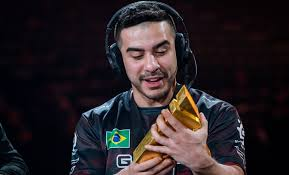
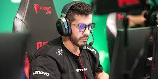

В августе 2015 года coldzera подписал свой первый контракт с командой
Luminosity Gaming[2]. Его первым турниром за новую команду был ESL One Cologne 2015[3],
где ему удалось провести свою команду через групповой этап и выйти в четвертьфинал турнира,
но они были выбиты шведской командой Fnatic[4].
В 2016 году им удалось выйти из группового этапа во всех турнирах,
в которых они участвовали, кроме одного, включая два финала. Однако
только в апреле они смогли выиграть свой первый турнир — MLG Columbus 2016.
Это принесло команде 500 000 долларов призовых, из которых 100 000 долларов
получил coldzera. Это был первый чемпионат премьер-уровня, в котором бразилец
получил награду MVP (самый ценный игрок). Впоследствии его команда выиграла
ещё два турнира за организацию Luminosity: DreamHack Austin и ESL Pro League Season 3.
Последним турниром команды стал ECS Season 1, где они заняли второе место, уступив команде G2
Esports[5]. В июле 2016 года пять игроков, игравших за Luminosity Gaming, были выкуплены организацией SK Gaming[6].
Первым чемпионатом команды стал июльский ESL One Cologne 2016, всего через несколько
дней после объявления о приобретении SK Gaming. Команде снова удалось занять первое место;
состав команды таким образом стал двукратным победителем Major-чемпионата: на тот момент
это удалось только шведской команде Fnatic и французской Team EnVyUs. coldzera снова стал
MVP турнира[7]. На фоне потрясающих выступлений, coldzera был признан лучшим игроком HLTV в 2016 и 2017 годах.
23 июня 2018 года coldzera, Fer, FalleN, Stewie2K и Boltz подписали контракт с Made In Brazil.
Состав команды был сформирован незадолго до подписания контракта; Boltz и Stewie2k заменили TACO
(который перешел в Team Liquid) и felps. После неудовлетворительных результатов команда меняет
Boltz на Тарика «tarik» Целика, но и с новым составом команда выигрывает только один турнир —
ZOTAC Cup Masters 2018. 21 декабря организация объявила о возвращении TACO, felps и zews. К
этому моменту coldzera стал показывать выдающиеся индивидуальные результаты, однако в организации
были проблемы с командной работой, и это не принесло ему новых результатов. В 2018 году coldzera
попал на десятое место в список 20 лучших игроков мира по версии HLTV[8].
12 июля 2019 года MIBR подтвердила, что coldzera становится запасным игроком,
а его место временно занимает zews[9], который в дальнейшем выступил на StarLadder
Berlin Major 2019[10]. 25 сентября бразилец официально покинул MIBR и перешел
в FaZe Clan[11]. Заметным достижениям для coldzera после вступления в FaZe Clan стала
победа на BLAST Pro Series: Copenhagen 2019[12].